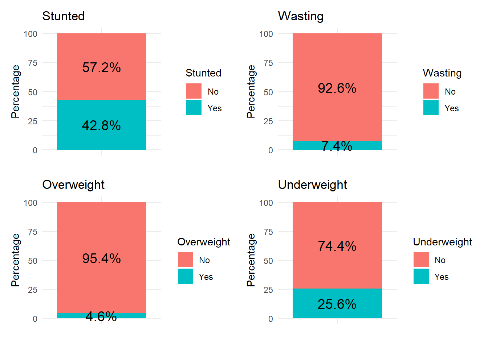

Chapter 3 MAIHDA variables
Important considerations for MAIHDA modelling: In MAIHDA modelling we are looking to estimate effects of intersectional exposures. Large sample sizes are important because predictions are calculated for individuals grouped within intersection axes (e.i: Girl, whose mum has low education & who comes from a poor family), meaning for specific subsamples of the general population.
For a first set of analyses I used data from all Pakistani surveyed in the Multiple Indicator Cluster Survey (MICS), round 6: https://microdata.worldbank.org/index.php/catalog/4181 Because the data was delivered by regions, all four regional datasets needed to be stacked (common columns were kept & all observations were compiled).
Possible Outcomes
We were interested in broad health outcomes of children under 5 years of age. Some of the variables considered were: - ECDI: Early Childhood Development Index - Anthropometric variables (Stunting, Wasting, Underweight, Overweight)
ECDI
| Characteristic | N | N = 42,3851 |
|---|---|---|
| ECDI | 42,385 | |
| FALSE | 20,942 (49%) | |
| TRUE | 21,443 (51%) | |
| 1 n (%) | ||
Numeric var: distribution
Binary var If have a score equal to 3 or more, the child is considered to be developmentally on track.
| Characteristic | N | N = 42,3851 |
|---|---|---|
| ECDI | 42,385 | |
| FALSE | 20,942 (49%) | |
| TRUE | 21,443 (51%) | |
| 1 n (%) | ||
Construction of ECDI
In this table we describe, in text format, the answers contributing to being developmentally on track.
Context:
Creation of Early Childhood Development Index. The ECDI consists of 4 dimensions: Literacy-numeracy, Physical, Socio-emotional & Approaches to learning. In total 10 questions are distributed across these dimensions, making up a 10-item ECDI. The ECDI is a binary variable: (a)Being developmentally on track VS (b)Not being on track.
Below I describe the variables associated to each ECDI dimension and the answers(scores) contributing to being developmentally on-track. For reference, ECDI items are coded such that 1: Yes & 2: No.
(1)Literacy-numeracy:
Vars: EC6, EC7, EC8 Developmentally on track: Having a score of 1 in at least 2 out of the 3 items.
(2)Physical
EC9=1 OR EC10=2
(3)Approaches to learning:
EC9=1 OR EC10=1
(4)Social-emotional:
At least 2 out of the 3 items received these scores: EC13=1 , EC14=2 , EC15=2
ECDI ITEMS
Here are the frequencies of children who are developmentally on track per ECDI dimension in Pakistan.
| Characteristic | N | N = 42,3851 |
|---|---|---|
| literacy_track | 42,385 | |
| FALSE | 32,548 (77%) | |
| TRUE | 9,837 (23%) | |
| physical_track | 42,385 | |
| FALSE | 2,457 (5.8%) | |
| TRUE | 39,928 (94%) | |
| learning_track | 42,385 | |
| FALSE | 8,116 (19%) | |
| TRUE | 34,269 (81%) | |
| socioemotional_track | 42,385 | |
| FALSE | 19,582 (46%) | |
| TRUE | 22,803 (54%) | |
| 1 n (%) | ||
Anthropometric Vars
We have three measures constructed from anthropometric values we use to create malnutrition indicators such as, stunting, wasting, underweight & overweight. These measures are (1) Height for Age, (2)Weight for Age & (3)Weight for Height.
The distributions of these ratios is used to create the malnutrition indicators. Cut-off specifications for category definitions are as follows:
- stunting height-for-age ≤-2 SD of the WHO Child growth standards median.
- wasting weight-for-height ≤-2 SD of the WHO Child growth standards median.
- overweight weight-for-height ≥+2 SD of the WHO Child growth standards median.
- underweight weight-for-age ≤-2 SD of the WHO Child growth standards median.
Distribution of anthropometric ratios following the WHO z-score guidelines.

Social exposures
0ur goal was to select a set of social exposures to be used in strata of MAIHDA models. A characteristic of these exposure was that they could be interpreted as proxys of systems of oppression. Some of the variables considered were:
The first set of variables selected to create the strata were chosen based on the conceptual relevance of variables as exposures of broad health outcomes (i.e: wealth index is a broad-scale social variable, easily used for non-determined health outcomes, compared to urban index) & data availability (i.e: urban & rural indeces had large %NAs).
The first set of variables used were:
- Mothers Education
- Wealth Index
- Child’s Sex
- Native language of respondent (converted into a binary var of dominant/minority language defined based on the region of residence.)
Missing values were found for Mother’s education (N=3) & Native language of the respondent (N=30). Without these missing values we have a sample size of 42 352.